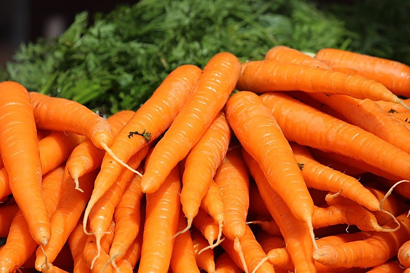
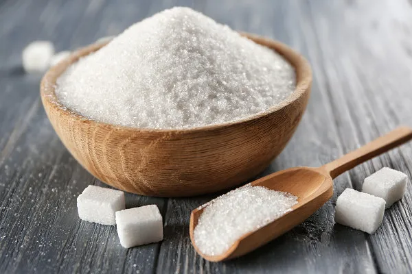
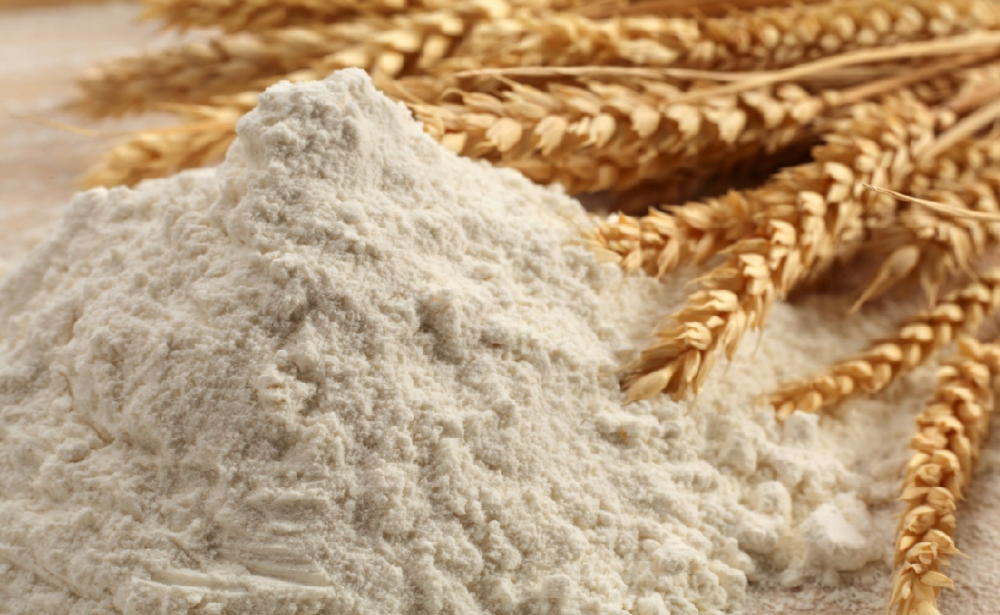
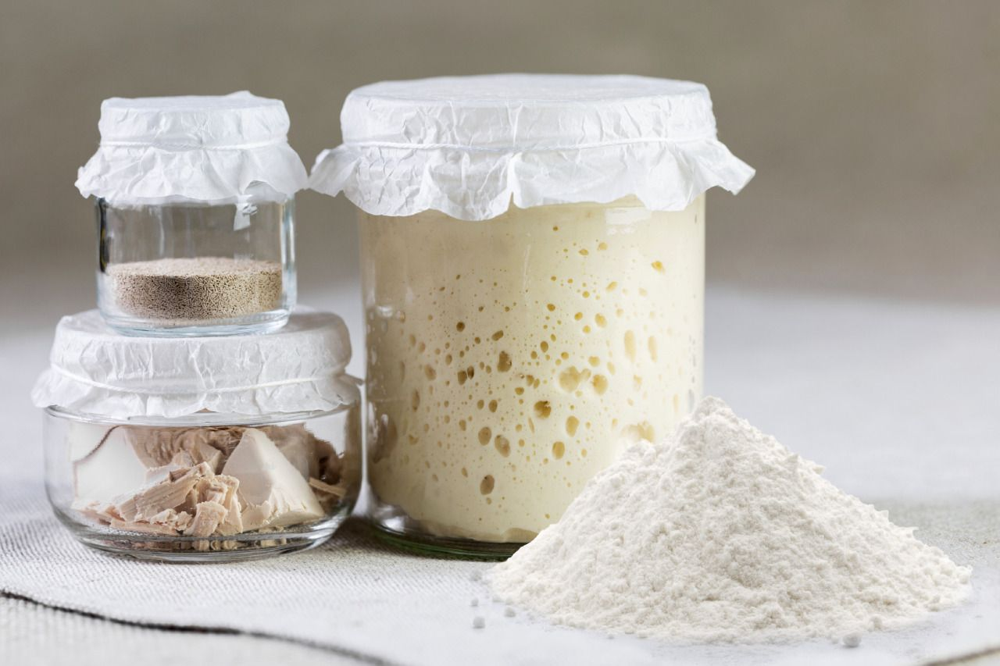
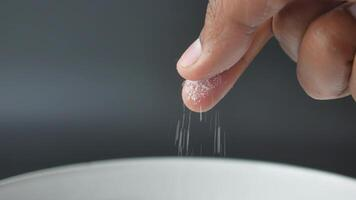

Ingredientes
- 3 cenouras médias descascadas e picadas
- 3 ovos
- 1 xícara de óleo
- 2 xícaras de açúcar
- 2 e 1/2 xícaras de farinha de trigo
- 1 colher (sopa) de fermento em pó
- Pitada de sal




